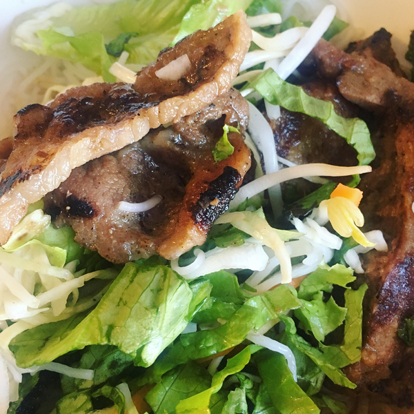
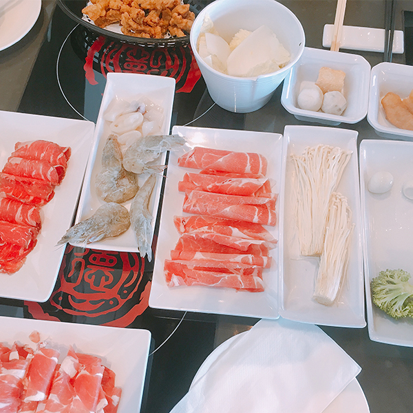
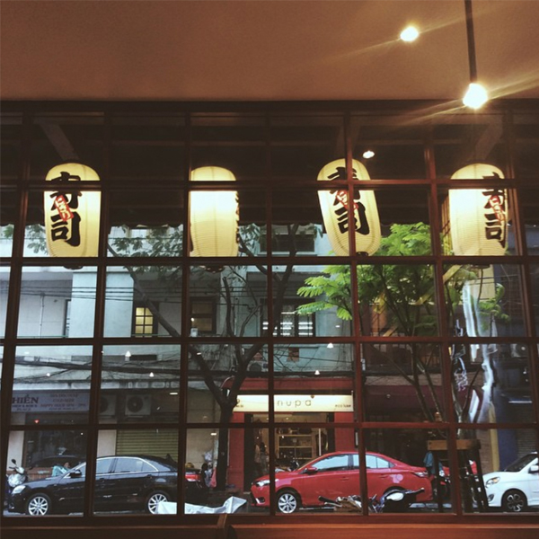

VIETNAMESE FOOD

Vietnamese cuisine features a combination of five fundamental tastes in the overall meal.
Each Vietnamese dish has a distinctive flavor which reflects one or more of these elements.
Traditional Vietnamese cooking is greatly admired for its fresh ingredients, minimal use of dairy and oil, complementary textures, and reliance on herbs and vegetables.
With the balance between fresh herbs and meats and a selective use of spices to reach a fine taste, Vietnamese food is considered one of the healthiest cuisines worldwide.
Vietnamese Restaurant:
- Huong's Bistro - 359 Booth St, Ottawa, ON K1R 7K1
- Pho Tuan - 300 Booth St, Ottawa, ON K1R 6N6
CHINESE FOOD

Chinese cuisine is an important part of Chinese culture, which includes cuisine originating from the diverse regions of China, as well as from Chinese people in other parts of the world.
Because of the Chinese diaspora and historical power of the country, Chinese cuisine has influenced many other cuisines in Asia, with modifications made to cater to local palates.
Chinese Restaurant:
- Golden Palace - 2195 Carling Ave, Ottawa, ON K2B 7E8
- Sea King Seafood Restaurant - 1558 Merivale Rd, Nepean, ON K2G 4B5
JAPANESE FOOD

Japanese cuisine encompasses the regional and traditional foods of Japan, which have developed through centuries of social and economic changes.
The traditional cuisine of Japan is based on rice with miso soup and other dishes; there is an emphasis on seasonal ingredients.
Side dishes often consist of fish, pickled vegetables, and vegetables cooked in broth.
Seafood is common, often grilled, but also served raw as sashimi or in sushi.
Japanese Restaurant:
- 168 Sushi Japanese Buffet - 1651 Merivale Rd, Nepean, ON K2G 3K2
- Japanese Village - 170 Laurier Ave W, Ottawa, ON K1P 5V5